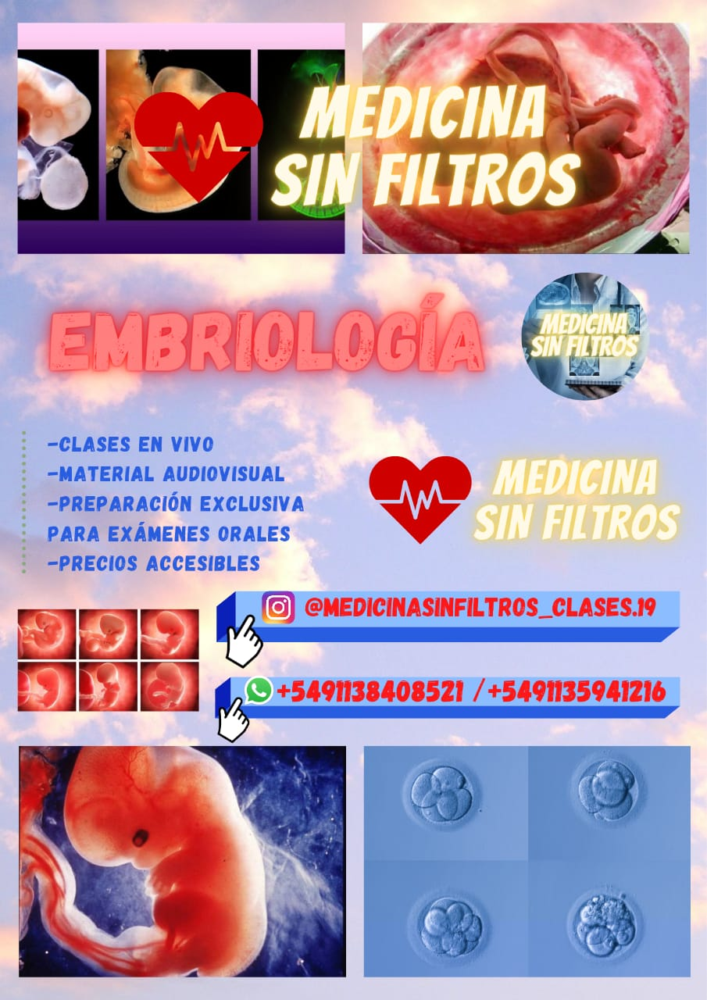

Fiosiologia
Desarollo de Medicina

Embriologia
Desarollo de Medicina

Biologia celular
Desarollo de Medicina

Biologia
Desarollo de Medicina
asa
Estos son algunos cursos y temas vas a poder desarrollar mas a profundo los temas, para poder seguir adelante en cualquier traba que tengas
Desarollo de Medicina
Desarollo de Medicina
Desarollo de Medicina
Desarollo de Medicina
This is a longer card with supporting text below as a natural lead-in to additional content. This content is a little bit longer.
This is a longer card with supporting text below as a natural lead-in to additional content. This content is a little bit longer.
This is a longer card with supporting text below as a natural lead-in to additional content.
This is a longer card with supporting text below as a natural lead-in to additional content.
Elegimos esta cede por la ubicacion entre nuestras tantas facultades para darles un buen punto de origen
230 dias al año
Mejor ubicacion
100% remoto o presencial
Varias maneras de pago